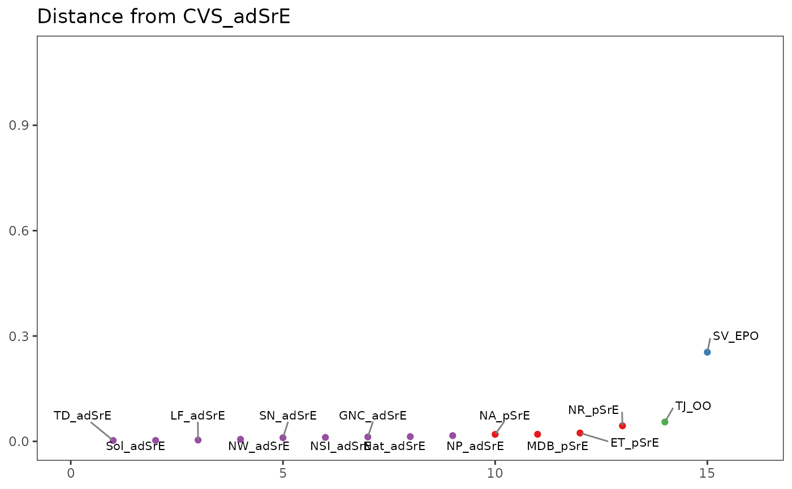

R/plotSpectraDist.R
plotSpectraDist.RdThis function plots the distance between a reference spectrum and all other
spectra in a Spectra object. Distance can be defined in a number of
ways (see Arguments).
plotSpectraDist(spectra, method = "pearson", ref = 1, labels = TRUE, ...)The returned value depends on the graphics option selected (see GraphicsOptions).
A data frame or list containing the data plotted. Assign the value and run str()
or names() on it to see what it contains. Side effect is a plot.
The plot is displayed, and a ggplot2 plot object is returned if the
value is assigned. The plot can be modified in the usual ggplot2 manner.
If you want the plotted values, you can access them via the base graphics mode.
To compare all spectra simultaneously in a heatmap, see
sampleDist. Additional documentation
at https://bryanhanson.github.io/ChemoSpec/
# This example assumes the graphics output is set to ggplot2 (see ?GraphicsOptions).
library("ggplot2")
data(SrE.NMR)
txt1 <- paste("Distance from", SrE.NMR$names[1])
txt2 <- paste("Rank Distance from", SrE.NMR$names[1])
p <- plotSpectraDist(SrE.NMR)
p <- p + labs(title = txt1, xlab = txt2, ylab = txt2) +
coord_cartesian(ylim = c(0, 1.1), xlim = c(0, 16))
p
